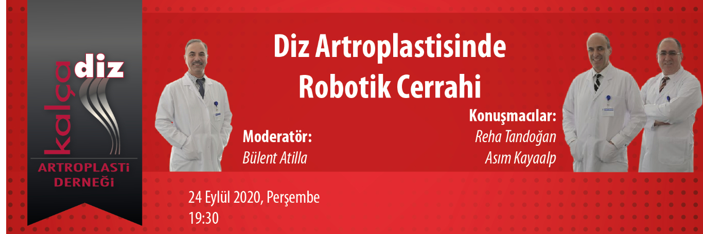

Değerli Meslektaşlarımız,
Kalça Diz Artroplasti Derneği eğitim faaliyetleri içerisinde yer alan "Webinar" oturumu 24 Eylül 2020, Perşembe günü saat 19:30'da gerçekleştirilecektir.
Moderatörlüğünü Bülent Atilla'nın yapacağı webinarda Reha Tandoğan ve Asım Kayaalp “Diz Artroplastisinde Robotik Cerrahi” konusunu ele alacaklardır. Webinar'a http://webinar.artroplasti.org.tr adresinden, bilgisayar ve mobil cihazlarınızla bağlanabilirsiniz.
Bu eğitim yılı içinde düzenlediğimiz diğer webinarlarımızın kayıtları, portalımız www.artroplasti.org.tr üzerinden dernek üyelerimizin erişimine sunulmuştur.
Saygılarımızla,
Webinar kaydını izlemek için tıklayınız.

